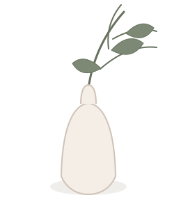

Сильний стрес і внутрішня напруга
магістр
психології
практика
з 2016 року
50
хвилин
600
грн
українська
і російська
онлайн
очно за попереднім
погодженням
Коли варто звернутися
Коли може бути потрібна підтримка
Не обов’язково чекати моменту, коли справлятися самостійно вже неможливо. Звернення може бути способом уважніше поставитися до свого стану.
Криза або відчуття втрати опори
Емоційне виснаження та перевтома
Складні життєві зміни та переїзд
Тривога, невпевненість і самокритика
Напруження у стосунках і сім’ї
Наслідки важкого досвіду
Потреба краще зрозуміти себе і свій запит
Напрями роботи
З чим можна звернутися
Запит може бути сформульований нечітко. На першій зустрічі можна разом визначити, що зараз потребує найбільшої уваги.
Стрес і перевтома
Тривале напруження, перевантаження, труднощі з відновленням і відчуття, що ресурсів стало менше.
Кризові періоди
Різкі зміни, втрати, розриви, переїзд, невизначеність і потреба заново знайти опору.
Емоційні складнощі
Тривога, розгубленість, пригніченість, самокритика або складність розпізнати власні почуття.
Пошук себе
Питання вибору, особистих меж, цінностей і напрямку, у якому хочеться рухатися далі.
Стосунки і сім’я
Напруження у спілкуванні, конфлікти, повторювані сценарії та сімейні звернення.
Підлітки від 17 років
Складні зміни, навчальне навантаження, тривога, самооцінка та стосунки з близькими.
Про Аліну та її підхід
Дбайлива присутність і повага до вашого темпу
Я — Аліна Горб, психолог і магістр психології. Практикую з 2016 року. Працюю з підлітками від 17 років, дорослими, жінками, чоловіками та сімейними зверненнями.
Для мене важливо створити спокійний простір, у якому можна говорити про складне без тиску та оцінювання. Ми рухаємося від актуального запиту, враховуючи досвід, межі й можливості людини.
- активне слухання й уважність до контексту
- індивідуальний темп та спільне визначення цілей
- регулярна професійна супервізія
“Я поруч, щоб допомогти пройти непростий період бережно і з повагою.

Освіта і диплом
Професійна основа
Аліна Горб
Магістр психології
Дніпровський національний університет імені Олеся Гончара
2024
Перший контакт
Як проходить консультація
- 01
Перше звернення
Напишіть коротко у формі або на email. Telegram стане активним після підтвердження username.
- 02
Узгодження
Домовимося про зручний час, мову та формат зустрічі.
- 03
Консультація
Зустріч триває 50 хвилин. Основний формат — онлайн; очно — за попереднім погодженням.
- 04
Наступні кроки
Подальша робота і темп визначаються разом відповідно до запиту.
Опора в роботі
Принципи і професійні межі
Психологічна консультація не замінює екстрену, медичну або психіатричну допомогу. У кризовій ситуації звертайтеся до місцевих екстрених служб.
- КонфіденційністьДбайливе ставлення до приватності й особистої інформації.
- ПовагаБез оцінювання, тиску та нав’язування готових рішень.
- Межі компетенціїЧесне обговорення формату та перенаправлення, коли потрібен інший спеціаліст.
- Без гарантійРезультат залежить від багатьох чинників і не може бути обіцяний наперед.
- СупервізіяРегулярна професійна підтримка як частина відповідальної практики.
Важливі деталі
Часті запитання
Яка вартість і тривалість консультації?
Консультація триває 50 хвилин і коштує 600 грн.
Якими мовами проходять зустрічі?
Українською або російською — оберіть комфортну мову у формі.
Чи можна звернутися з іншої країни?
Так. Онлайн-консультації доступні незалежно від країни проживання.
Чи можливі очні консультації?
Так, лише за попереднім погодженням. Адреса публічно не розміщується.
Як підготуватися до першої зустрічі?
Спеціальна підготовка не потрібна. Достатньо коротко описати, що зараз турбує найбільше.
Чи можна звернутися із сімейним запитом?
Так. Формат і склад учасників варто попередньо обговорити у першому повідомленні.

Перший крок
Контакти і запис
Напишіть коротко, який формат і мова вам зручні. У відповідь Аліна уточнить доступний час і наступний крок.
- TelegramВідкрити Telegram
- Emailalinahorb1991@gmail.com
- Що буде даліУзгодження часу, мови та формату консультації.
Не надсилайте у першому повідомленні медичні документи, кризові подробиці або інші чутливі дані.
Коротке звернення
Коли всередині надто багато, перший крок може бути дуже простим.
Написати Аліні